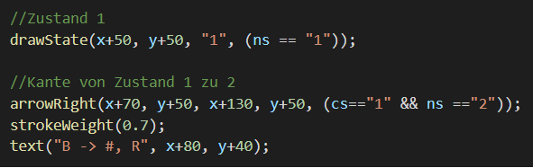
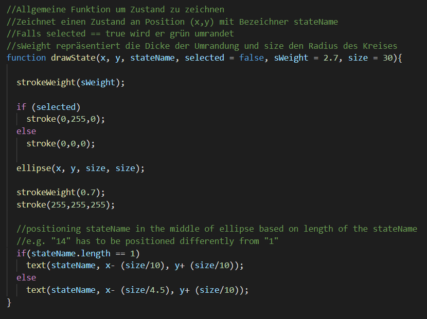
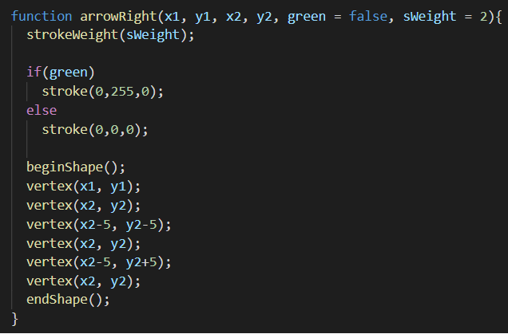
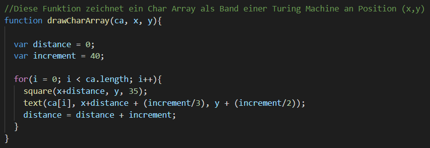
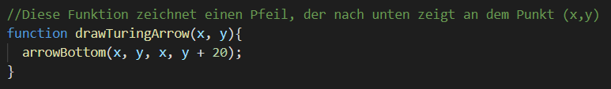
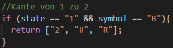
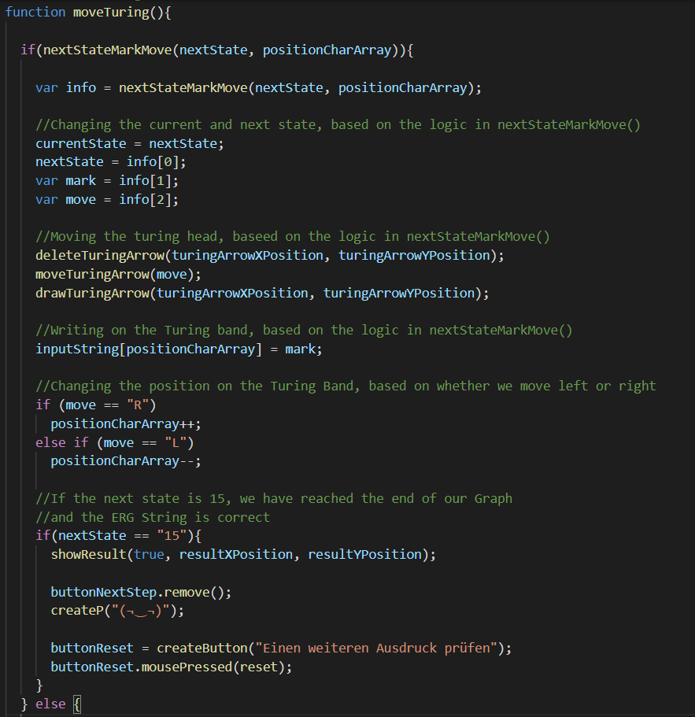
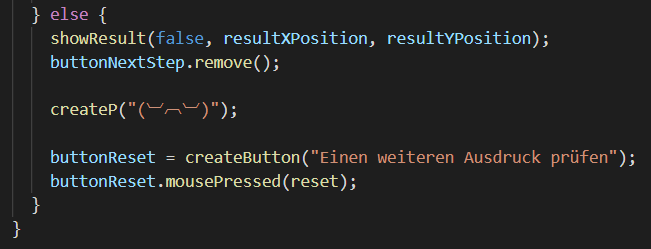

Technisch:
Ich habe das p5.js Framework für die Darstellung des Graphen, und des Turing Bandes verwendet
Fachlich:
Es soll die Gültigkeit einer Zeichenkette in Hinsicht auf die
Embedded Reber Grammar, mit Hilfe einer
Turingmaschine, bestimmt werden
Ich habe das Programm in Teile in Form von Funktionen zerlegt
Ich dachte mir: "Es ist klar, dass ich ein paar Funktionen in jedem Fall benötige"
So z.B. drawGraph(x, y, cs, ns) - diese Funktion zeichnet einen Graphen am Punkt (x,y) auf der Canvas
Die Kante zwischen cs (current state) und ns (next state) wird farblich unterlegt
Hier ein Einblick in drawGraph() :

Ein Zustand wird mit drawState() gezeichnet :

Ich habe 8 Funktionen geschrieben um Pfeile in 8 verschiedene Richtungen zu zeichnen - hier eine:

Ich habe mich dazu entschieden das Turing Band mit Lese- und Schreibkopf ebenfalls zu animieren
Ich denke es ist übersichtlicher als eine Tabelle
Mit drawCharArray() können wir das Turing Band zeichen:

Mit drawTuringArrow() den Schreib- und Lesekopf der Turingmaschine:

Ebenfalls benötigen wir eine Funktion, die uns die Logik vorgibt, also in welchen Zustand wir als nächstes wechseln
Und was der Turingkopf schreiben und in welche Richtung er sich bewegen soll
Mit nextStateMarkMove(state, bandPosition) können wir anhand von bandposition, das nächste Zeichen ermitteln
Dies zusammen mit dem jetzigen Zustand (state), liefert uns die benötigten Informationen:

Falls kein Fall zutrifft gibt nextStateMarkMove() false zurück
Wir benötigen hier und da noch einige Hilfsfunktionen, z.B. für die Aufgabe den Turingkopf zu bewegen
Ich will hier aber nicht auf alle eingehen und komme schnell zu einer vereinfachten Version der Funktion, die die meisten Funktionen zusammenbringt
moveTuring() bewegt die Turing Maschine schrittweise:

Falls uns nextStateMarkMove() einen nächsten Schritt zurückgibt, bewegen wir die Turingmaschine angemessen
Falls wir uns in Zustand 15, und damit in "qacc" befinden, wissen wir die Zeichenkette ist gültig und geben die entsprechende Nachricht aus
Gibt uns nextStateMarkMove() false zurück, wissen wir der Zustand ist ungültig:

Die einzelnen Teile wurden mit Funktionen und Buttons, Inputfenster verbunden, sodass wir die in der Aufgabe vorgegebenen Verarbeitungsmöglichkeiten erfüllen